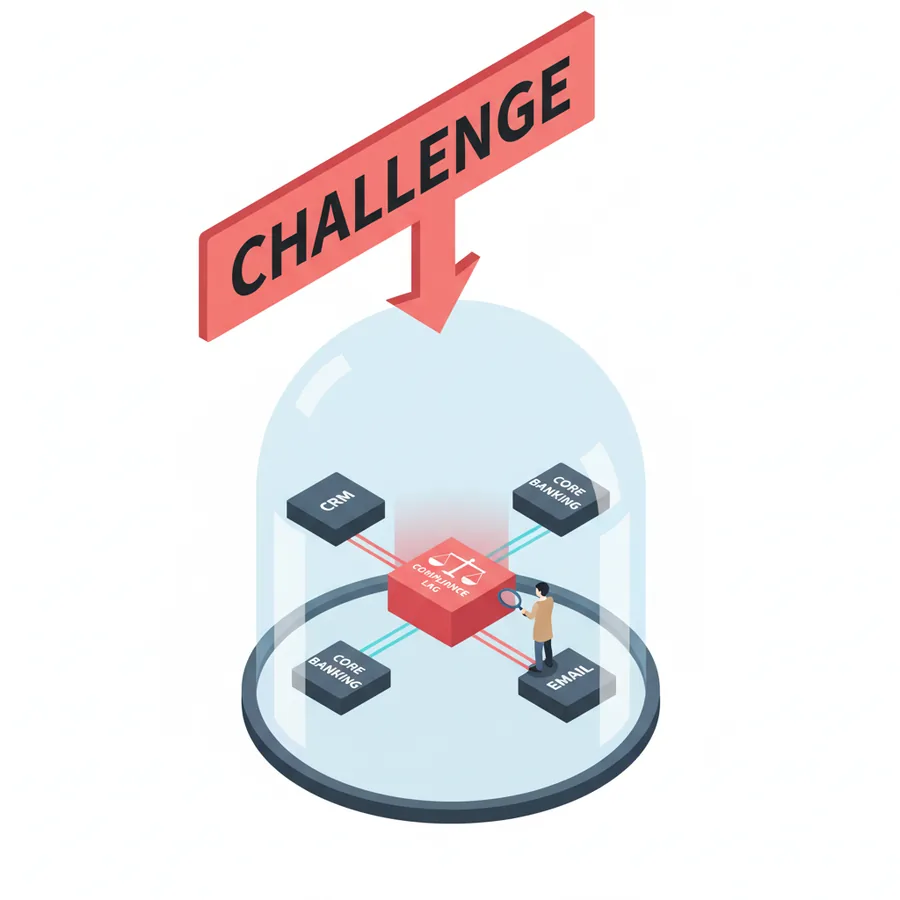

The challenge
Financial teams are losing time and money.
- Fraud signals are buried inside complaint data
- Teams scramble during audits
- Compliance and operations work in silos
ArthaShield Financial Intelligence Platform
The decision intelligence layer for BFSI. AI that makes your CRM and workflows financially intelligent — and every decision audit-ready.
One contextual intelligence layer across customers, transactions, products, risks, regulations and operations — connecting what existing systems keep separate.
Hover or tap a node to see how ArthaShield connects it.
connected entity types, from customer to regulation.
of context over the systems you already run.
traceable — so every recommendation can be explained.
Fraud, audits and compliance shouldn't live in separate rooms.

The challenge
The answer
ArthaShield makes CRM and workflows financially intelligent — safely, and with a human in the loop.

The agents
Risk readiness, ongoing monitoring, governance controls and audit-ready outputs — generated automatically, in one platform.
Pre-deployment risk checks so every AI model is compliant, explainable and audit-ready before go-live.
AI Risk MonitorClassifies and analyses incoming cases to detect drift, anomalies and compliance violations.
Control CenterRole-based approvals, audit-ready dashboards and ISO-aligned governance controls.
GovernanceShaping what's next
Autonomous, human-approved AI agents for RRBs, UCBs, NBFCs and Fintechs — across KYC, AML, credit, collections, settlement and complaints. Each one turns a challenge into an action.
Explore the top 10 agentic use casesWe align with leading AI governance programmes and research to keep our approach auditable, principled and regulator-friendly.
A comprehensive open-source cybersecurity and privacy control library that unifies fragmented requirements into a single, auditable control system — enabling faster execution, simpler audits and scalable governance as regulations evolve.
Practical, multi-stakeholder playbooks for aligning AI deployment with public interest and regulatory expectations. We use its cross-industry standards and checklists for governance-ready product design and stakeholder reporting.
We reference these programmes to show our alignment with global governance thinking.
Every AI decision is traceable and audit-ready. No black-box risk.